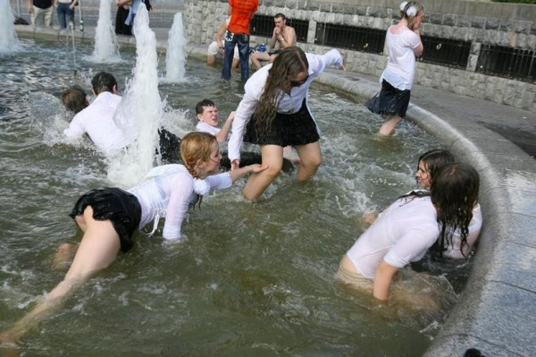

Свой выпускной я помню не очень хорошо. Не потому, что напился воздухом свободы и разведённым спиртом, а просто потому, что времени уже прошло достаточно, чтобы стереть из памяти незначительные видимо события.
Помню как перед выпускным ездили с родителями в Кемерово и купили в «Звёздочке» первый в жизни Костюм. По большей части синтетический, чёрный, с весёлым воротником костюм. Ещё у меня был галстук-бабочка.

После выпускного, те кто не устал выпускаться по традиции пошли встречать рассвет на третий пруд. Где первые два в Ижморке почти никто не знает, а третий вполне себе пруд.
На пруду я (единственный из всех выпускников то ли дурак, то ли трезвый) пруд переплыл. Хотя до этого не делал этого ни разу. После этого тоже.
На том пруду я больше никогда не купался. Ведь впереди играл волнами надежд целый океан возможностей.